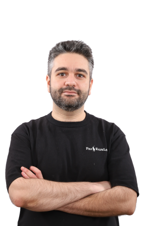

Supporting leadership as a contract CTO: technology strategy, architecture decisions, engineering practices, and structuring the product team.
Help teams building AI products move from "vibe coding" to real product in ~90 days: install the engineering that makes daily releases safe (evals, rollback, observability, domain modeling), on a sovereign, model-agnostic AI infrastructure (OpenAI, Claude, Gemini, Grok, or self-hosted open-weight models).
Platform: Multi-cloud (AWS, GCP, Azure) + self-hosted (Coolify, Railway, Vercel)
Stack: Go, TypeScript / Node.js, NestJS, React / Next.js, PostgreSQL, MongoDB
AI: OpenAI, Claude, Gemini, Grok, open-weight models; evals, LLM observability
Tools: GitHub, Docker, K8s, Terraform
Developing a system enabling used-vehicle dealers to source qualified stock from B2B platforms and obtain financing (credit line) while managing default risk and high-risk vehicles.
Platform: Cloud providers — Azure
Stack: NestJS, PostgreSQL, REST, EventBus, Docker, React
Testing: Jest, Playwright, BDD (Gherkin)
Tools: GitHub, Notion, Grafana
Leading web engineering to deliver high-fidelity real estate investment products (property sourcing, qualification, renovation cost estimation, transaction tracking, and property management).
Platform: Cloud providers — AWS / GCP
Stack: NestJS, MongoDB (Atlas), GraphQL, Docker, React Native Web, Storybook
Testing: Jest, Supertest, Playwright, BDD (Gherkin)
Tools: GitHub, Notion, SonarCloud, DataDog, Sentry
Building web/mobile apps on top of Streamwide's proprietary "mission-critical" telecom engine — features such as Telephony / PTT / Geofencing used by a range of customers (Defense, Law Enforcement, Firefighters, Aviation Security...).
Platform: RedHat Linux 8 / Oracle VirtualBox (self-hosted solution)
Web interfaces: React, HTML, CSS, Sass, JavaScript, jQuery, PHP, Zend / Symfony
Testing: Mocha, Chai
Tools: Git / GitLab, Jira, Jenkins, NPM
Launched as a pilot project in the field of home appliance connectivity, this project introduces an IoT solution to connect and control appliances over the internet. The De Dietrich oven embeds a WiFi connectivity module that exchanges messages (commands and telemetry) with the mobile app through a cloud platform.
Cloud platform: Microsoft Azure (.NET C#) (IoT Hub, Notification Hub, Event Hub, Stream Analytics, Cosmos DB, Azure Functions, B2C OAuth)
Embedded connectivity module: ESP32 (C/C++), MQTT
Mobile app: React Native (Node.js/JavaScript), Redux, event bus, push notifications, Android/iOS, OAuth
Tools: Git, TFS, Reactotron, NPM
Likoul is an educational platform allowing users of Brandt smart TVs to access a catalog of courses (aligned with the Algerian national curriculum) through a TV app. We delivered a streaming solution to manage content and collect usage analytics.
Infrastructure: Dedicated servers (OVH), NginX, Deployment & CI: Jenkins
Streaming server: Nimble
Backend: Express.js application, JWT, Joi, Mocha/Chai/Mockgoose, DB: MongoDB
Admin portal: React.js web application
Tools: Git, TFS, Jenkins, NPM
Comprehensive solution to manage all Brandt TVs and phones in Algeria, including warranty management, firmware and application updates, and usage-data collection...
Infrastructure: Dedicated servers (OVH), Firebase (Cloud)
Backend: Express.js, JWT, Joi, Mocha/Chai/Mockgoose, DB: MongoDB
Admin portal: React.js web application
Tools: Git, TFS, Jenkins, NPM
Providing development and IT consulting services, primarily via the Freelancer.com platform.
Objective: The "/comment" site publishes reviews of new movies. As added value, the site's author Rich Heimlich proposes a novel way to express viewer engagement (Appeal) without spoiling scenes for the reader. I integrated a data-visualization tool driven from an admin interface, rendering charts on the various articles published on the site.
Technical environment: PHP, MySQL, Chart.js, JavaScript (jQuery), CSS, social media sharing (Pinterest)
Objective: Novus Technologies, a subsidiary of Novus Aviation Capital, provides innovative solutions for civil aviation. NVSscan is a solution for inventorying safety equipment on aircraft. I worked with their team to build a mobile app that communicates with an NFC reader device and returns the scanned equipment IDs, flagging missing items or anomalies.
Technical environment: React Native (JavaScript), Native Modules (Java), Bluetooth, NFC, GitLab
Objective: To simplify a procedure that required multiple email exchanges and a paper contract filled by hand and scanned back to the training organization, I was asked to build a tool allowing platform users to view their contract and sign it using a mouse or graphics tablet. A PDF copy is then emailed to the signer.
Technical environment: PHP, TCPDF, MySQL, SVG, JavaScript (jQuery), CSS
Objective: Build an e-commerce site for a major supplier of bedding, home articles, and décor, integrating PayU — Turkey's largest payment gateway.
Technical environment: PHP (CodeIgniter/OpenCart), MySQL, HTML, CSS, jQuery, PayU API, Git
Objective: Build software using the existing employee database (5,000+ records) of the Wilaya of Médéa's Communal Guard to compute salary back-pay based on each officer's years of experience. The software prints, in multiple formats, the documents and slips sent to the treasury and archives.
Technical environment: Windows Forms Applications (C# .NET), Crystal Reports, MS Access
Infrastructure: Shared hosting, dedicated servers, MS Azure, Amazon Web Services, DNS, FTP
Web development: HTML5, CSS3, JavaScript, jQuery, PHP, CodeIgniter, WordPress
Databases: MySQL, PostgreSQL, MSSQL
Tools: Git, GitLab, GitHub, Composer
Contributing to the development of the products maintained by the small company.
Windows Forms Applications (C# .NET), Crystal Reports, MSSQL, PHP, HTML, CSS, MySQL